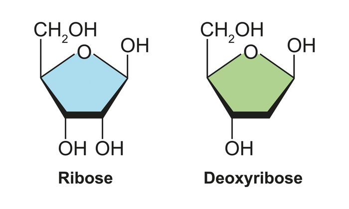

Hợp chất vòng

Image source: Topic 1 image sources
| Vietnamese | Hợp chất vòng / Hợp chất mạch vòng |
|---|---|
| English | Cyclic compound |
| Pronunciation | /ˈsaɪ.klɪk ˈkɒm.paʊnd/ |
| Word type | Danh từ (Noun) |
Meaning (Vietnamese)
Hợp chất vòng là hợp chất có mạch cacbon khép kín tạo thành vòng.
Meaning (English)
an organic compound whose atoms are connected to form one or more rings.
Example
Benzene is a cyclic compound.
Benzen là một hợp chất vòng
Source of information: Topic 1 notes (see Sources)